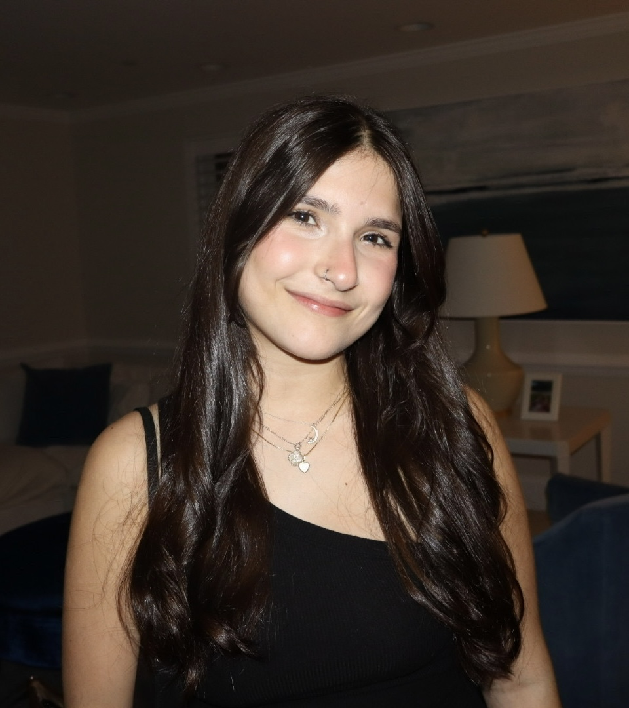

About Me!
Sophia Yodice is a sophomore journalism major at the Philip Merrill College of Journalism at the University of Maryland. She is curently a freelancer for Her Campus Maryland and is a communications intern at the College of Agricultural and Natural Resources. She has previous experience in videography and audience engagement via social media platforms. She is currently undecided on hoer current path in journalism and hopes to explore all there is to offer. She will be pursuing a general business minor in the coming fall semester